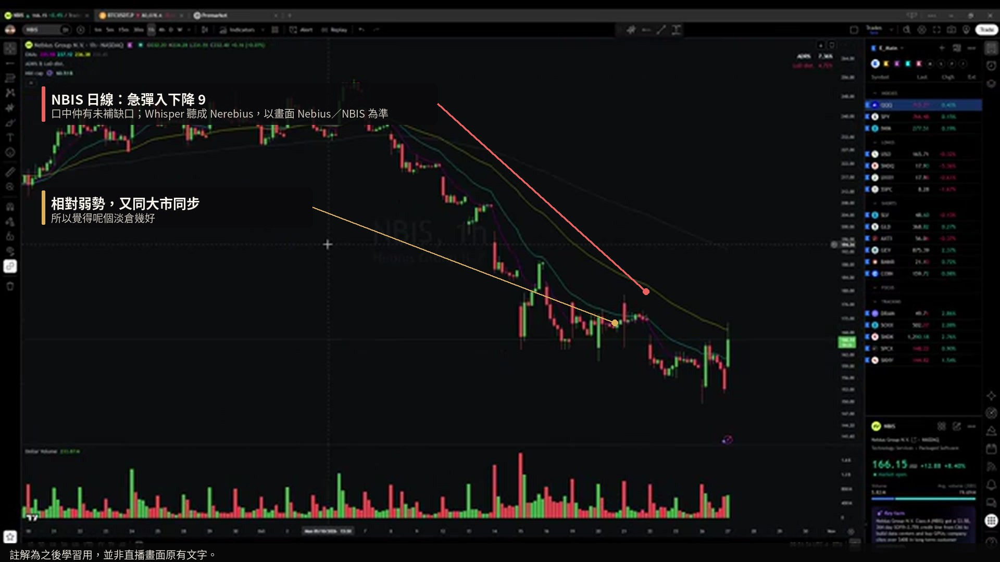

概要
聊天室問 NBIS，佢覺得形態同位置都齊
31:41 聊天室多人問 Nerebius／NBIS 好唔好淡。佢覺得好：唔單止自身圖好睇，仲有急彈入下降 9、未補缺口、相對弱勢，而且同大市同步。
Whisper 把 NBIS 聽成 Nerebius，把 short 聽成 shot；以畫面 Nebius Group N.V.（NBIS）為準。
圖一
NBIS 日線：急彈入下降 9 同未補缺口
直播 32:00

原話
Nerebius, so many of you guys asking Nerebius is a good short. 9 EMA. Yeah, I think it's a good one. Not only it looks great on its own chart, a really quick bounce into the declining 9 and also into this unfilled gap level. Relative weakness, and also the market, it also synchronized with the markets too.
Nerebius，你好多人問 Nerebius 好唔好淡，9 EMA。係，我覺得係好淡倉。唔單止佢自己張圖好睇，仲有一次好急嘅反彈，彈入下降中嘅 9，亦彈入呢個未補缺口。相對弱勢，而且同大市都同步。
Whisper 把 NBIS 聽成 Nerebius，把 short 聽成 shot。畫面係 Nebius Group N.V.（NBIS），以畫面為準。9 EMA 以口中為準，圖例冇印週期。
點樣讀
佢把「自身圖、下降 9、未補缺口、相對弱勢、同大市同步」疊埋一齊，先話呢個淡倉幾好。
畫面公司名只當圖上文字。
附註
注意事項
- 講 NBIS 之前畫面曾經停喺 QQQ 小時圖，對白轉到 NBIS 之後先切日線。